Onze œuvres, montrées en grand et sans retouche. Studio à Québec, et sur place.
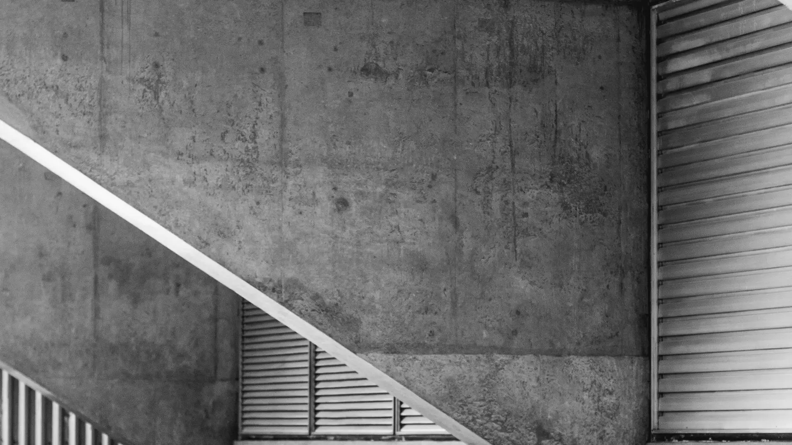
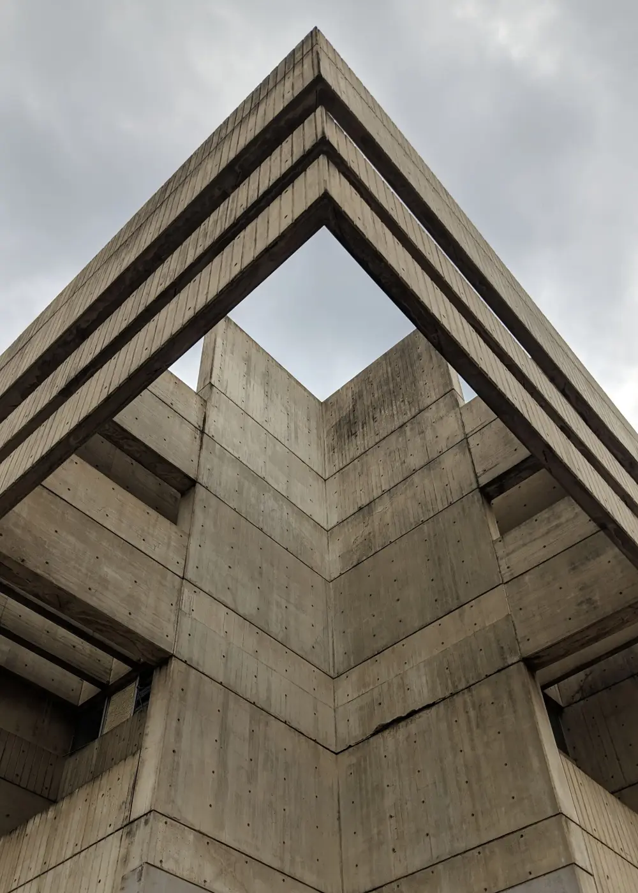
Architecture, intérieur, objet. En studio à Québec ou sur place, dans un rayon de 40 km.
L’accrochage
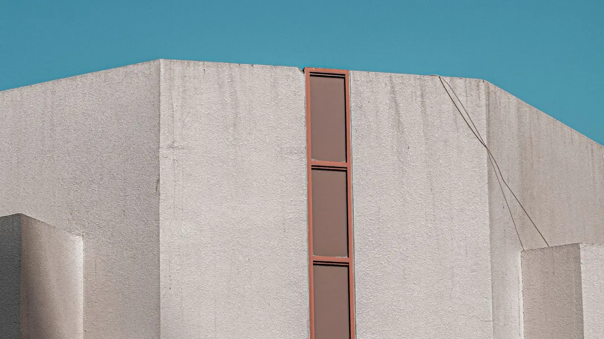
Le crépi tient toute la surface, et un seul bandeau de fenêtres la coupe. Les verticales sont redressées : c’est fait sur tous les fichiers livrés.
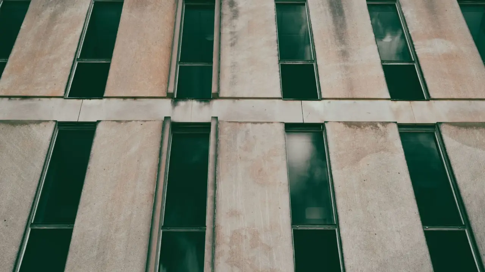
Le béton a vieilli par plaques, le vitrage est vert bouteille. Le décalage d’un rang à l’autre est ce qui tient l’image.
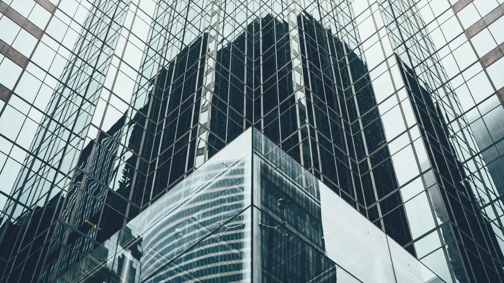
Le V n’est pas dans le bâtiment : c’est le reflet de celui d’en face. Il n’apparaît que depuis un point, et il disparaît trois pas plus loin.
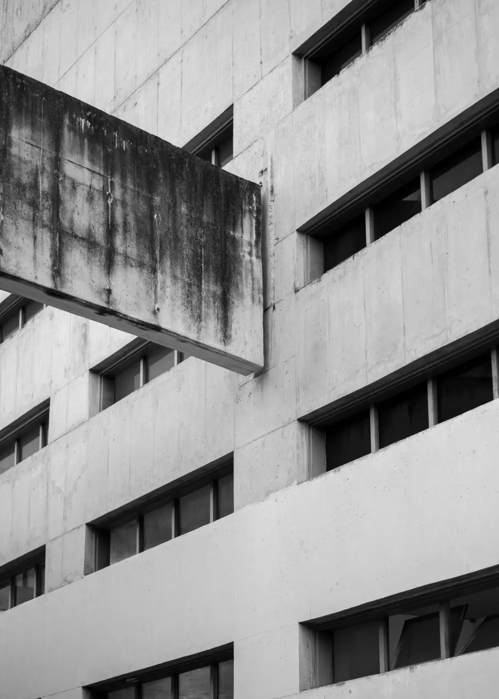
La dalle ne tient à rien de visible. Il fallait la prendre par-dessous, à l’heure où la coulure du béton porte encore son ombre.
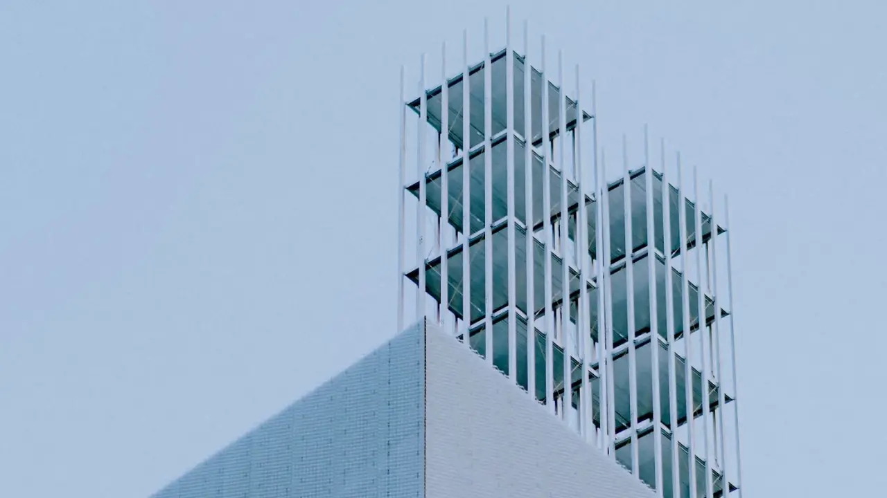
Un ciel couvert n’est pas une mauvaise journée : c’est la seule lumière qui laisse lire les barres d’acier sans les brûler.
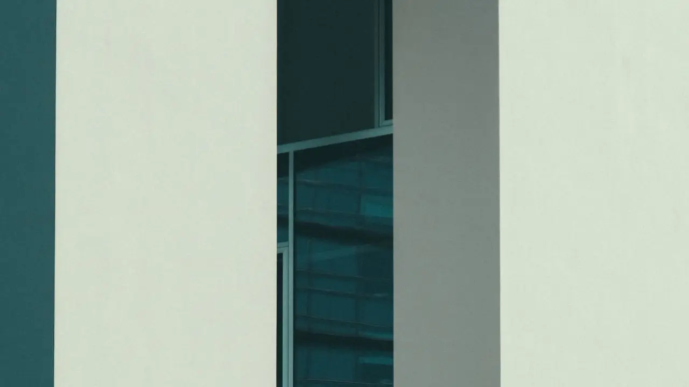
Deux murs presque blancs, et entre eux une bande de verre sombre. Au téléobjectif, l’écart se referme et l’ouverture devient une ligne.
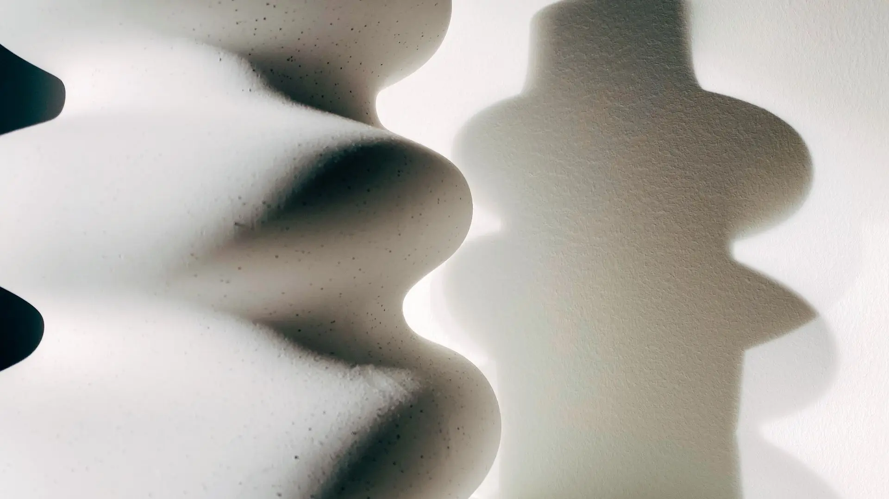
Blanc sur blanc. L’objet ne se détache que par son ombre : c’est elle qu’on place en premier, l’objet vient ensuite.
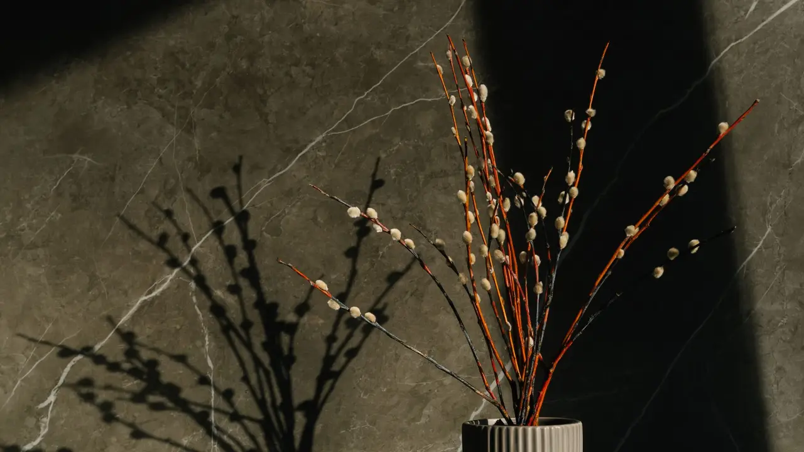
Une seule source, très basse, à droite du cadre. L’ombre portée occupe plus de place que l’objet, et c’est elle le sujet.
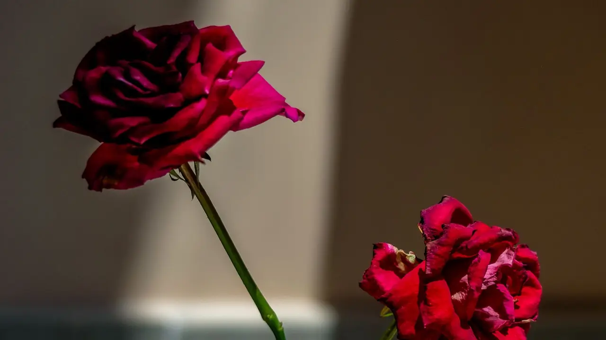
Une seule source, et le reste du mur laissé dans l’ombre. Le rouge n’a pas été relevé : c’est celui que la lumière a donné.
Ce qui est livré
Ce qui est à vous
Les heures comptées commencent quand la première prise est possible, pas quand le premier pied sort de son sac.
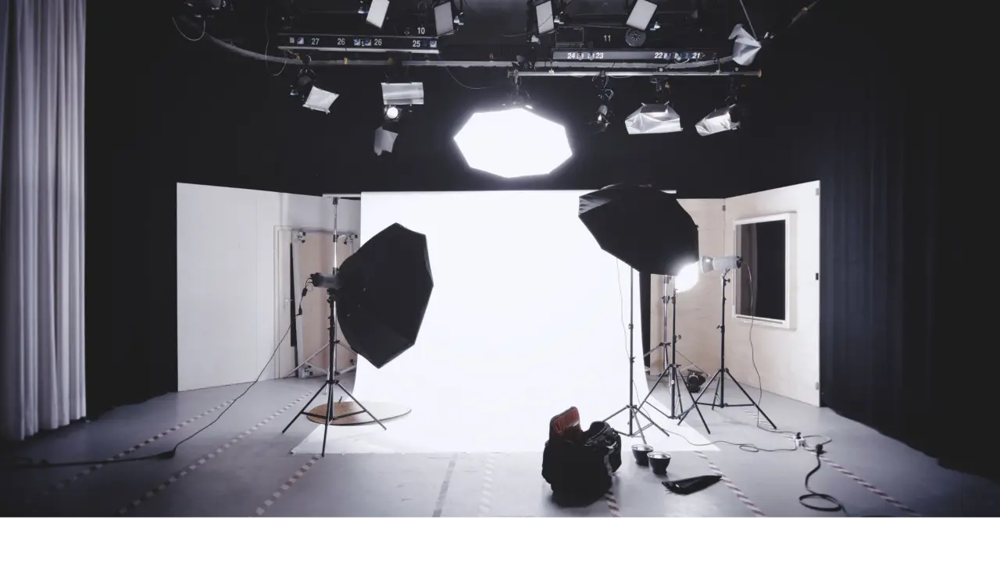
La lumière du jour se relève pièce par pièce.
Trois quarts d’heure. Les suivantes vont trois fois plus vite.
Selon le ciel. Une date de repli est inscrite au contrat.
La planche complète se passe sur place, avec vous.
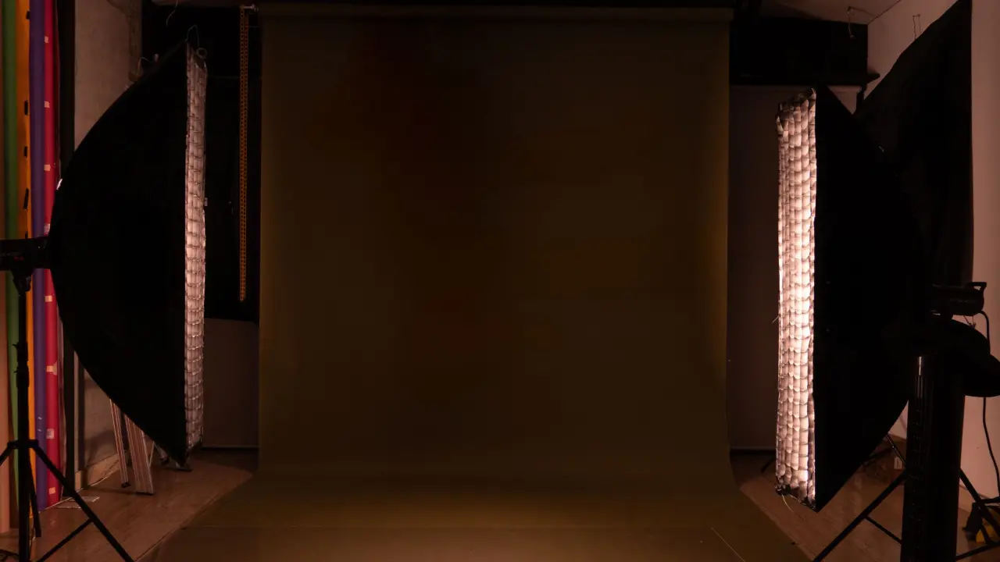
Le choix du fond se fait avant la séance, pas pendant. Une fois la première image faite, plus rien ne bouge.
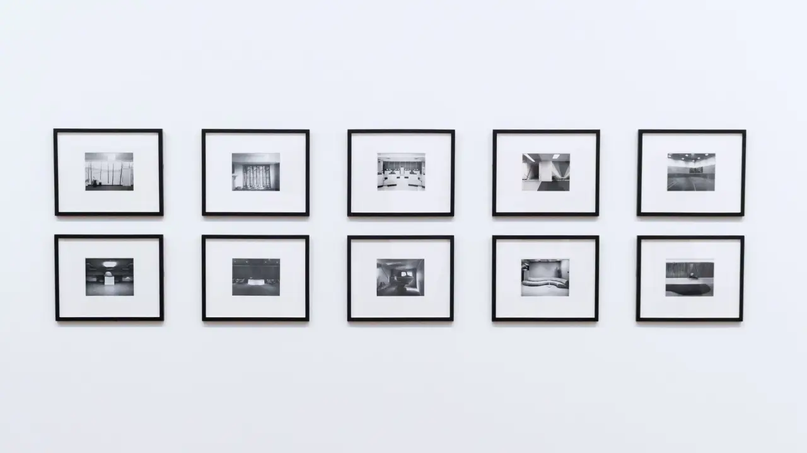
Le tirage n’est pas compris. La commande se passe chez le laboratoire de votre choix, avec le fichier livré : il est à vous.
Écrire
Réponse écrite sous un jour ouvrable : le nombre de fichiers, le délai, la licence.
Formulaire de démonstration : il n’envoie rien, et rien n’est enregistré.